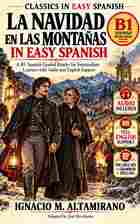

Vocabulary CSV
137 words and expressions with story-specific English meanings and first appearance.
Download CSV →
CLASSICS IN EASY SPANISH · READER COMPANION
Listen to an accessible retelling of a Mexican Christmas classic. Learn through the story, with audio and free study resources.
Listen while reading the corresponding part in the book. Choose an audio player below or open its MP3 directly.
Practise vocabulary, review the characters and follow the story's conflicts at your own pace.
137 words and expressions with story-specific English meanings and first appearance.
Download CSV →Trace political disagreements, village reform and personal reconciliation through the story.
Open timeline →Explore the captain, the brother priest, the villagers and their relationships.
Open map →Eleven-part workbook with 41 comprehension questions and five detail replays.
Open / print →Story first: the Conflict Timeline and Character & Conflict Map include spoilers. Use these after completing the story.
Read first. Enjoy each part of the Spanish story without stopping for every unfamiliar word. Listen next. Replay the matching recording. Review the vocabulary and the English translation in the book when helpful.
The audio comes from Internet Archive. No registration is required to use this web companion.